// jornada_real.log
soy una sola persona —
En esta laptop hay
0
trabajando ahora mismo.
[VENTANA_01]
> rebuild --portfolio
server-render · schema.org
Reconstruyendo mi propia web.
Un agente rehace el portafolio de árkos.com mientras yo decido la estrategia.
> /portfolio · server-render · schema
[VENTANA_02] · precio-vivo · pipeline
Precio Vivo.
Convierto los PDFs diarios del MIDAGRI en un dashboard de precios mayoristas. Data pública que nadie había liberado.
> 72 productos ·
0
tests
[VENTANA_03] · resthub · kds
#0421 · mesa 7
en vivo
#0422 · llevar
en cocina
#0423 · mesa 2
listo
Un sistema en producción.
Depurando la pantalla de cocina de un ERP de restaurante. En vivo, con pedidos reales.
> POS · cocina · tiempo real
árkos.com
VENTANA_01
> server-render · schema
precio-vivo
VENTANA_02
> 72 productos · 73 tests
resthub · kds
VENTANA_03
> POS · cocina · tiempo real
// el_método
No escribo cada línea.
Dirijo.
Decido qué se construye, cómo, y reviso cada paso. Es dirigir un equipo — solo que el equipo son agentes.
// quién_soy
Rodrigo. Construyo software para
pymes en LATAM
.
Solo, con este método. Si construyes —o quieres construir— así, sígueme.

@arkos_devs